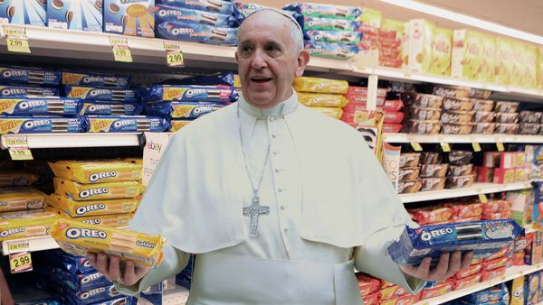
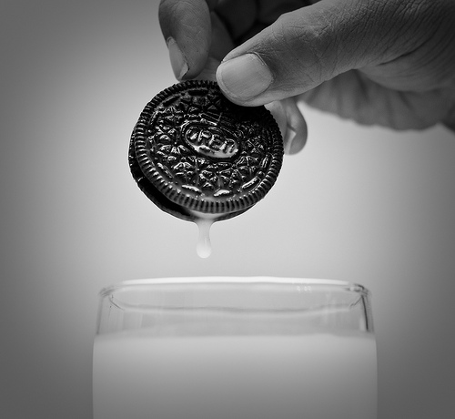
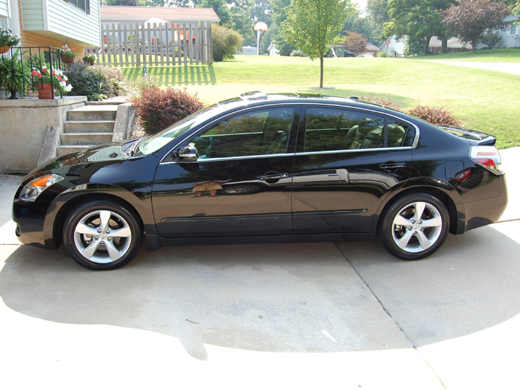
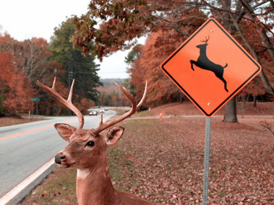
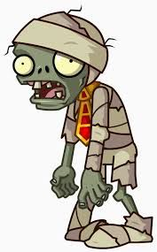
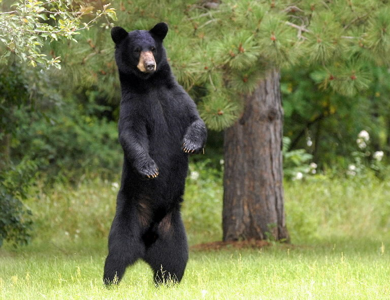

I'm surrounded by circular gold goodness. Two bright yellow discs begin to roll towards me with its exposed chalk fillings hanging above the ground. The wheel begins to roll over me, and I jolt awake. I had another dream of me being in golden Oreo valley and it was the best. I ran downstairs and opened up my seemingly empty pantry, and of course, a unopened pack of double stuffed golden oreos sat on the shelf. I grabbed the tray and placed it on the kitchen table. I swung the fridge ooen to grab the gallon of milk from the fridge and poured myself a glass of Mayfield Milk . I grabbed the magnificent cookie and dipped it entirely in the milk. After five seconds, I lifted the cookie up.
Milk dripped off of my finger tips and dropped back into the now stained milk. One oreo, two, three, before I knew it I cleaned out the entire tray of oreos. I began to worry. What would happen if I ran out? Although I had atleast 20 more cookies in the two remaining trays, I knew I would not be satisfied for the rest of the day. The nearest Walmart was no longer than five minutes away, but I knew my neighboorhood was dangerious at night. I looked at the clock right above the stove, slowly ticking to a quarter past 12. I grabbed my car keys and ran into the garage. I turned on my 2008 Nissan Altima and made my way towards the Walmart. I sped down the road, eyes focused on the objective at hand when an object began to show through the darkness. I slowed the car down then slammed on the brakes. In front of the car stood a family of deer, stunned and confused. I let go of the brake and began to make my way around the family when another family of deer appeared.
 I turned on my high beams and out from the darkness was dozens of deer. Thus came another decision, do I turn around or carry on the journey on foot. The store was no less than a three minute jog from where I was, but I didn't know what else was out in the darkness. I parked the car and got out the driver's seat. I already came this far and I wasn't going to let some deer stop me. I ran past the dozens of deer, their beady eyes beaming at my being in an almost motivating stare. I ran into the store and made my way to the snack aisle. I examine every shelf and finally located the legendary cookie. I grabbed three boxes and made my way to the counter. I put my items on the conveyer belt and took my wallet out of my pocket. As I waited for theclerk to scan the items, I looked around the store and realized it was completely empty. "Excuse me. I know it's past midnight but isn't it too quiet?" I asked the clerk. No response. "Excuse me...Excuse me!" I screamed. I tapped the shoulder of the dark haired clerk only to realize why he wasn't responding. The clerk reached out at me with it's cold grey hands trapped in the tiny checkout cubicle. The clerk was a zombie!!! I grabbed my oreos and ran for the exit, when another zombie sprung out of nowhere. I stiffed armed the creature and ran out the store. I looked back and saw a cluster of the undead creeping towards me.
My adrenaline kicked in and I sprinted the few minutes to the car in what seemed like seconds. I reached the car and all the deer were gone. I didn't stop to wonder, but instead tossed the oroes in the backseat and started the car. I began to turn the car the other direction when a large figure stepped out of the woods. I began to drive off without hesitation when the figure sprints towards the car. I look in the rearview mirror only to find a black bear on my trail. I pressed the gas through the floor and didn't look back. I pulled up to the garage, grabbed the oreos, and ran inside. I dropped the oreos on the kitchen counter and made my way to the fridge for a glass of milk. Worth it.
{kind=link}